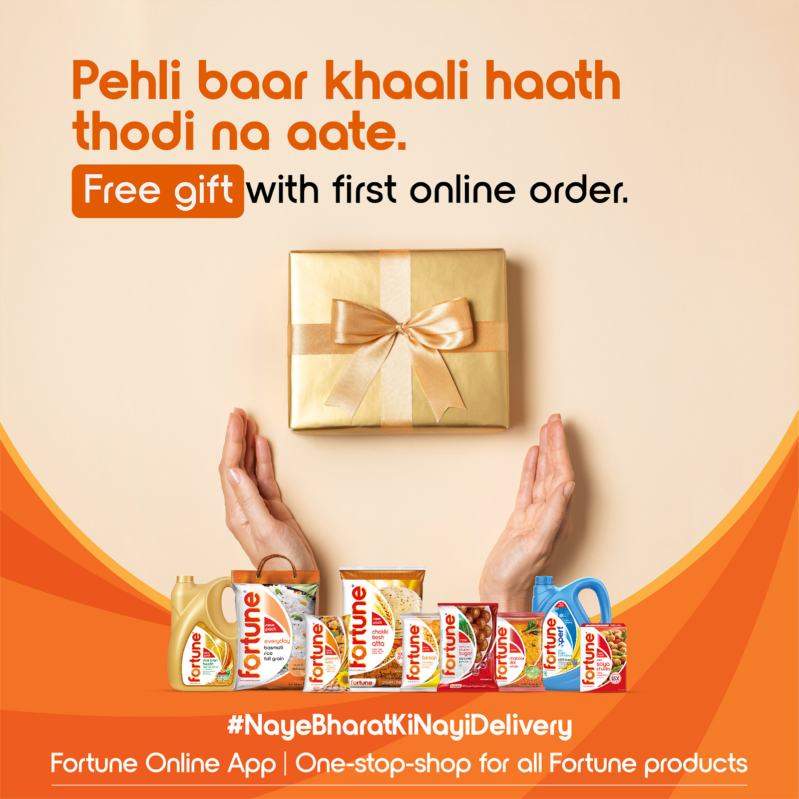
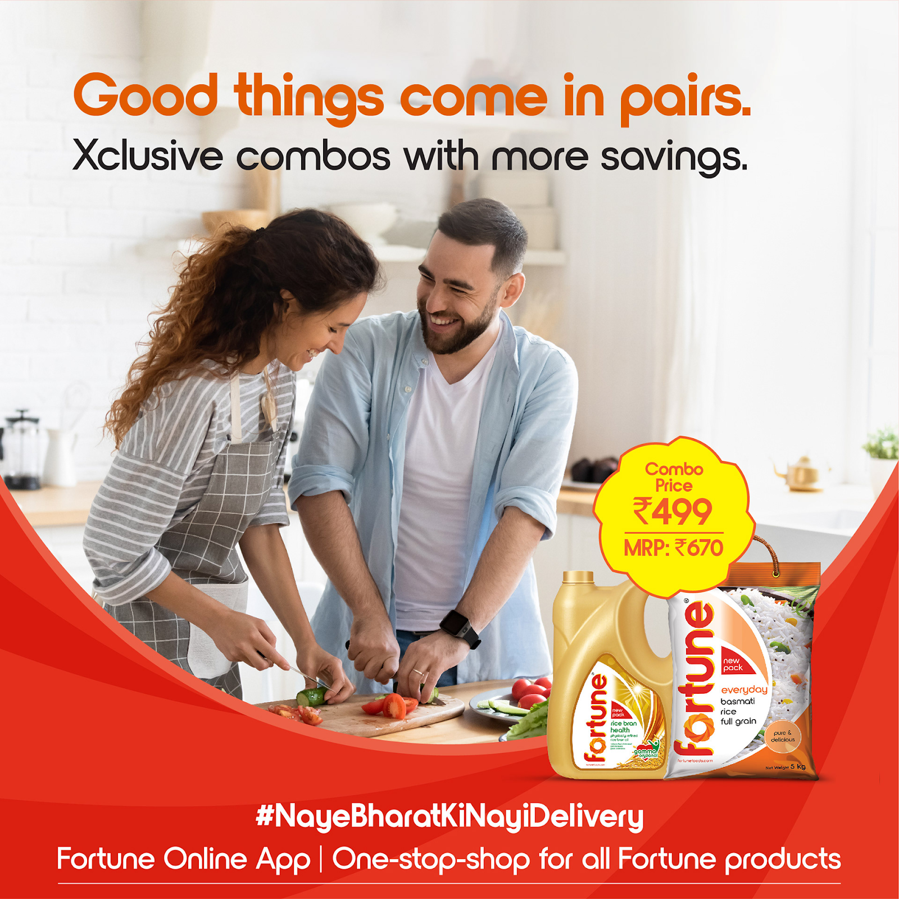
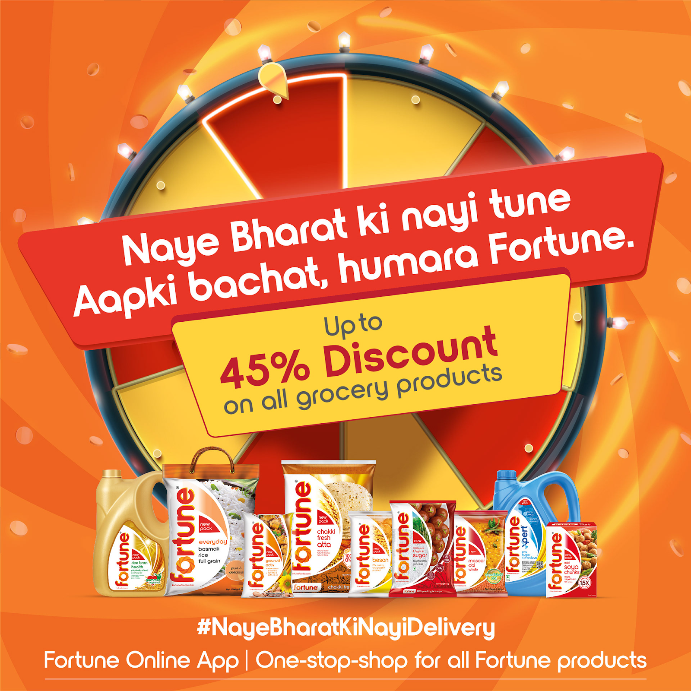
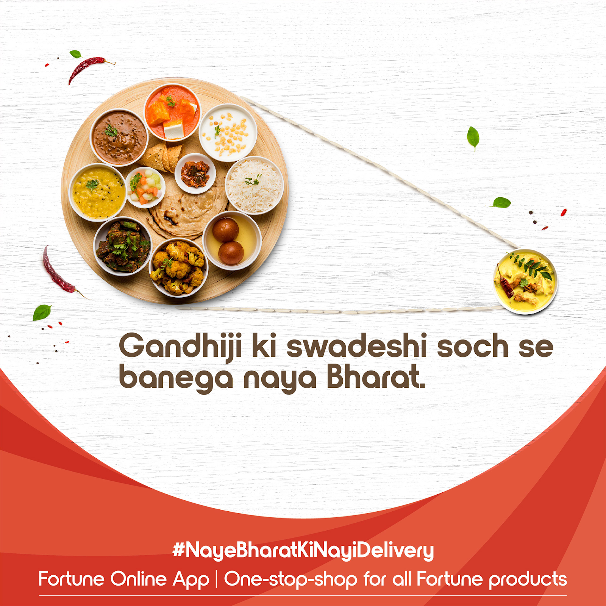
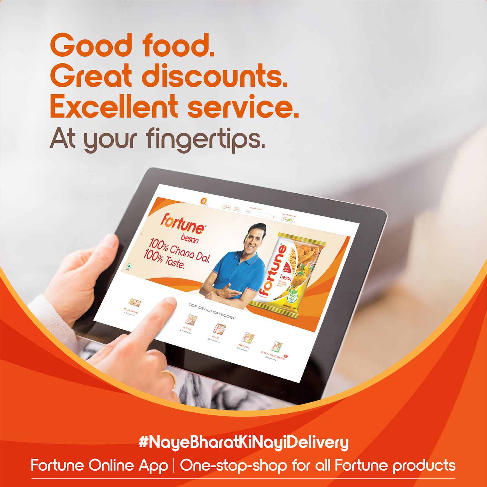

From brief to brand,
end to end.
This was not a campaign execution brief. It was a brand-building brief for a product that did not yet exist in market. Fortune Online was Adani Wilmar's first direct-to-consumer platform, a new channel, a new relationship with the customer, and a new way of thinking about a brand that had previously only lived on supermarket shelves.
The brief was grocery.
The problem was behaviour.
COVID-19 compressed a decade of D2C adoption into eighteen months. Supermarkets strained. Supply chains shortened. Home delivery stopped being a convenience and became a necessity. In this window, Adani Wilmar launched Fortune Online, the only platform dealing directly with consumers across the full Fortune product range.
The platform had strong product foundations: free delivery, first-order gifts, exclusive combos, doorstep access to everything from atta to edible oil. But the communication challenge was deeper than awareness. Fortune was a brand Indians trusted in the kitchen, not online. The task was to transfer that trust to a new behaviour, ordering groceries through an app, without losing the warmth and familiarity that made Fortune feel like home.
"Ab Chakki ka purana swaad, Fortune Online delivery ke saath." The brief in one line: keep the taste, change the habit.
Nostalgia as a
growth strategy.
The insight that unlocked everything: Indians don't buy atta. They buy the memory of their mother's rotis. The chakki, the stone mill, is a sensory shorthand for freshness, purity and home. Fortune Chakki Fresh Atta had already borrowed that equity. The launch campaign's job was to extend it into a new context: doorstep delivery.
Rather than positioning Fortune Online as a technology convenience, we framed it as a restoration. The old taste, now reachable without leaving home. #NayeBharatKiNayiDelivery carried both registers simultaneously: new India, new delivery, but the same Fortune your family has always trusted.
The work.






Multiple formats.
One consistent idea.
Rather than producing a single hero campaign, we built a content ecosystem. Multiple video formats designed to serve different stages of the customer journey, from awareness to conversion to retention. Each format was distinct in style but unified in voice.
Content ran across YouTube, Facebook and digital handles, with YouTube carrying the longer-form brand story and Facebook driving tactical engagement and festival moments.